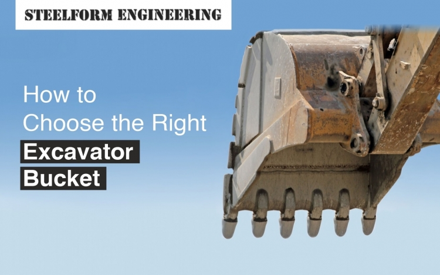

Excavator buckets are essential to any construction project involving digging, trenching, and material handling. A bucket is one essential attached to the end of an excavator's arm and is used to scoop up and move materials such as dirt, gravel, and rock. Choosing the right excavator bucket can significantly affect your construction project's efficiency and productivity. This article will discuss the factors you should consider when choosing the right excavator bucket.
One of the most crucial considerations when choosing the right bucket for your project are the size and capacity of an excavator bucket. Excavator buckets come in a range of sizes and capacities. Buy the excavator buckets by selecting the appropriate size of the excavator, the type of project, and the materials you will be handling.
If you are working on a small project or need to maneuver in tight spaces, choose a smaller bucket with a lower capacity. The size and weight of the compaction wheel should be perfected for the size of the mini excavator and the depth and density of the material being compacted. Mini excavator compaction wheels are another essential attachment that can be used with mini excavators to compact soil and other materials.
Several types of excavator buckets are available, and each is designed for specific applications. The most common bucket types include general-purpose buckets, trenching buckets, rock buckets, mud buckets, and grading buckets. For a bulk buy, consult a reliable supplier like Steelform Engineering, who can offer all these buckets, including rock buckets for sale.
General-purpose buckets are versatile and can be used for a range of applications, including digging, loading, and material handling. Trenching buckets are designed for digging narrow trenches and are narrower and deeper than general-purpose buckets. Rock buckets are designed for handling heavy and abrasive materials such as rocks and boulders. Grading buckets are designed for finishing work, such as levelling and smoothing surfaces.
The material used to construct an excavator bucket is another essential consideration. Excavator buckets are typically made of steel or a combination of steel and other materials, such as hardened steel or aluminium.
Steel buckets are durable and can handle heavy loads, but they can be heavy and may not be suitable for all applications. Hardened steel buckets are designed for more abrasive applications and are more resistant to wear and tear. Aluminium buckets are lightweight and ideal for applications that require less strength and durability.
The teeth and cutting edges of an excavator bucket are also important considerations. The teeth and cutting edges are the parts of the bucket that come into contact with the ground and the materials being moved.
The teeth and cutting edges of an excavator bucket can be made of different materials, such as hardened steel, carbide, or other alloys. Hardened steel teeth and cutting edges are durable and can handle most applications. Carbide teeth and cutting edges are more wear-resistant and are ideal for handling abrasive materials such as rocks and gravel.
The width of an excavator bucket is another crucial consideration. The width of the bucket determines how much material can be moved at once and how quickly the excavation process can be completed.
A wider bucket can move more material at once, but it may not be suitable for narrow or tight spaces. A narrower bucket can maneuver in tight spaces but may require more passes to move the same amount of material.
The shape of the bucket can also affect its performance. Some buckets are designed with a more rounded shape, while others are more angular. The shape of the bucket can affect its ability to dig, load, and handle materials.
A rounded bucket is better suited for digging and loading materials, while an angular bucket is better suited for grading and leveling surfaces. The shape of the bucket should be chosen based on the specific needs of your project.
The attachment style of the bucket is also an important consideration. Excavator buckets can be attached using a quick coupler or a pin-on system. A quick coupler allows the operator to quickly and easily change out attachments, while a pin-on system requires more time and effort to switch between attachments.
The attachment style you choose will depend on the specific needs of your project. A quick coupler may be the best option if you need to switch between attachments frequently. However, a pin-on system may be sufficient if you primarily use the same attachment for your project.
Choosing the right excavator bucket is crucial to the success of your construction project. By considering the above factors, you can ensure that you choose a bucket that meets the needs of your project and maximises efficiency and productivity.
When selecting an excavator bucket on sale or at a wholesale price, it's essential to work with a reputable and reliable supplier who can guide you through the process and provide you with the best options for your specific project. By investing in the right excavator bucket, you can save time, increase efficiency, and ultimately achieve a successful outcome for your construction project. Steelform Engineering can help you in perfecting excavator bucket fabrication in Melbourne, making sure to meet the standards and needs of your requirement.